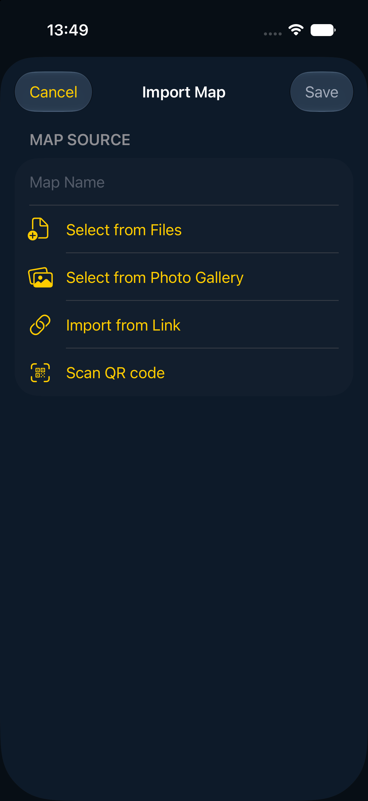
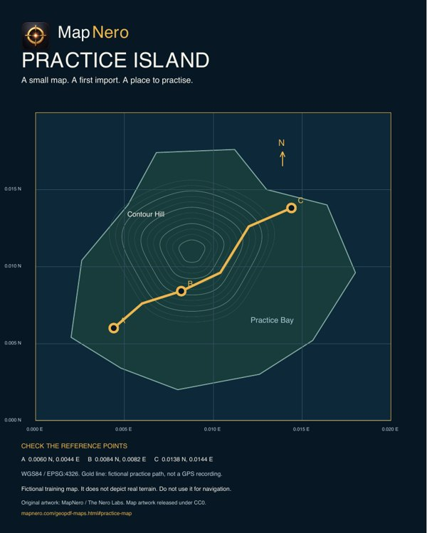
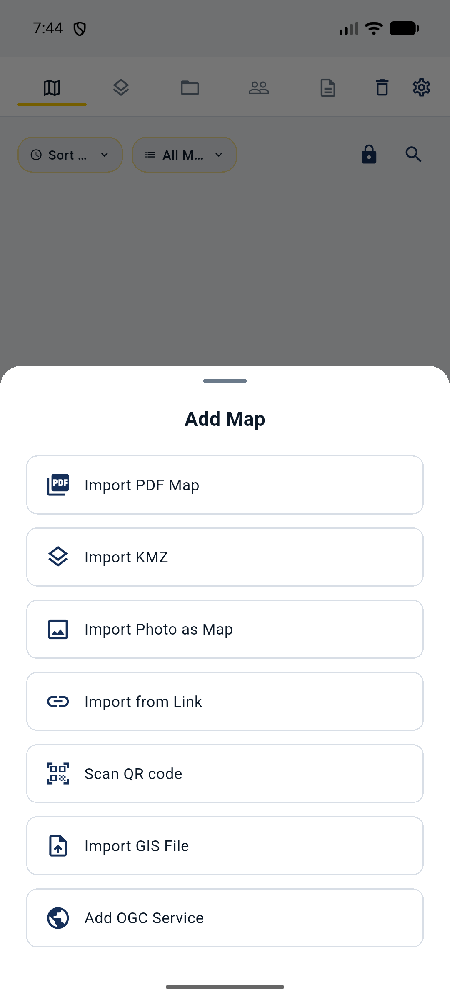

Baru menggunakan berkas peta?
Mulai dengan peta kecil dari tempat yang Anda kenal. Periksa berkas terlebih dahulu, lalu pilih perangkat dan ikuti langkah impor.
Coba peta latihan →PETA ANDA DI LAPANGAN
Impor peta PDF bergeoreferensi ke MapNero di iPhone atau Android. Buka peta, periksa posisinya dan gunakan bersama catatan lapangan Anda.
Unduh contoh GeoPDF gratis (52 KB)
Peta latihan fiktif dengan label berbahasa Inggris. Tidak perlu akun untuk mengunduhnya. Lihat contoh dan titik referensinya →
Unduh gratis. Pilihan dan batas impor bergantung pada format file, platform dan paket. Baca panduan di bawah sebelum memilih langganan.
Lihat cara mengimpor peta ↓
Mulai dengan peta kecil dari tempat yang Anda kenal. Periksa berkas terlebih dahulu, lalu pilih perangkat dan ikuti langkah impor.
Coba peta latihan →Jika PDF bergeoreferensi sudah siap, langsung ikuti langkah impor untuk perangkat Anda. Setelah impor, periksa posisi peta dan uji secara offline.
Langsung ke langkah impor →COBA BERKAS KECIL DAHULU
Unduh GeoPDF satu halaman berukuran 52 KB, lalu ikuti langkah impor di bawah. Peta ini berisi pulau fiktif dengan tiga titik referensi beserta koordinatnya.
Ini area latihan fiktif di dekat 0° LU, 0° BT, bukan medan nyata. Posisi GPS Anda biasanya berada di luarnya. Jangan gunakan untuk navigasi.
Setelah impor, buka peta dan bandingkan titik A, B, dan C dengan koordinat yang tercetak. Buka kembali tanpa jaringan. Unduh wilayah peta dasar secara terpisah.

Buka peta latihan di MapNero.
Bandingkan posisi titik referensi yang tercetak menggunakan WGS84 / EPSG:4326 dalam derajat desimal. Jika penampil memakai sistem koordinat lain, konversikan nilainya sebelum membandingkan.
| Titik | Lintang (°LU) | Bujur (°BT) |
|---|---|---|
| A | 0.0060 | 0.0044 |
| B | 0.0084 | 0.0082 |
| C | 0.0138 | 0.0144 |
Coba peta yang sama dalam format GeoTIFF →
Bandingkan jejak dengan titik A, B, dan C pada peta. Gunakan kedua file hanya untuk latihan.
PANDUAN VIDEO · TAKARIR BAHASA INDONESIA
Ikuti panduan 79 detik ini: impor peta, uji akses offline, lalu periksa posisi peta area kerja Anda.
Gunakan contoh fiktif untuk berlatih impor. Untuk memeriksa posisi Anda, gunakan peta area kerja yang nyata. Posisi GPS Anda biasanya berada di luar pulau latihan.
Unduh GeoPDF latihan gratis (52 KB) →
Belum punya file peta? Unduh GeoPDF latihan kecil dari MapNero. Pulau ini fiktif. Di iPhone atau iPad, buka Import Map, lalu Select from Files. Pilih PDF Anda. Di Android, pilih Add Map, lalu Import PDF Map. Buka peta dan periksa titik acuannya. Dapatkan contoh gratis di mapnero.com.
Selesaikan impor sebelum keluar dari jangkauan. Simpan file aslinya. Jika memerlukan area peta dasar, unduh secara terpisah. Periksa area dan tingkat zoom. Aktifkan mode pesawat dan buka kembali peta. Periksa area dan detailnya sebelum berangkat. Panduan tersedia di mapnero.com. Akses bergantung pada paket.
Peta sudah terbuka. Apakah posisinya benar? Bandingkan beberapa titik acuan yang dikenal pada peta. Di MapNero, Location Outside dapat berarti ponsel berada di luar batas peta. Pesan itu saja tidak membuktikan bahwa file tidak memiliki georeferensi. Periksa format file dan sistem koordinat sebelum mengubah pengaturan. Lihat MapNero dan panduan lapangan di mapnero.com.
SEBELUM MEMULAI
GeoPDF memuat informasi yang menempatkan peta pada lokasi di dunia nyata. PDF biasa mungkin hanya berisi gambar peta. Membuka file tersebut tidak menentukan letak posisi GPS Anda pada peta.
Gunakan peta dengan georeferensi yang valid, lalu periksa lokasi yang Anda kenal setelah impor. Jika posisi Anda berada di luar peta, bandingkan dengan Base Map dan periksa file sumber.
PILIH PERANGKAT ANDA
Anda juga dapat membuka file yang didukung dari aplikasi Files dengan MapNero. PDF dengan beberapa halaman memerlukan Pro pada platform Apple.
Panduan impor Apple (Inggris) →Anda juga dapat memilih file yang didukung di Downloads atau Files, lalu menggunakan Open with MapNero.
Panduan impor Android (Inggris) →
SIAPKAN SEBELUM KELUAR DARI JANGKAUAN JARINGAN
Selesaikan impor saat file masih dapat diakses. Aktifkan mode pesawat, buka kembali peta dan periksa area serta detail yang Anda perlukan. Jika Anda juga memerlukan area peta dasar, unduh dan uji area tersebut secara terpisah sebelum keluar dari jangkauan jaringan.
Pastikan impor file selesai dan tampilan berada di dalam batas geografis peta. Peta dasar yang belum diunduh berbeda dari masalah impor PDF lokal.
Panduan Apple menjelaskan georeferensi gambar secara manual dengan Core atau paket yang lebih tinggi. Diperlukan minimal tiga titik kontrol yang tersebar, tidak segaris dan memiliki koordinat yang diketahui. Baca panduan georeferensi foto (Inggris) sebelum memulai.
Bandingkan peta dengan lokasi yang Anda kenal dan simpan file asli serta catatan Anda. Panduan impor menjelaskan cara mengimpor ulang PDF lama agar diproses dengan pembaca georeferensi saat ini. Periksa langkah tersebut sebelum mengganti salinan yang telah diimpor.
Menyimpan hasil pindai sebagai PDF tidak menambahkan koordinat geografis. Georeferensi gambar secara manual dapat menyelaraskan titik yang diketahui, tetapi tidak meluruskan distorsi setempat atau lipatan kertas. Periksa lokasi lain yang dapat dikenali di berbagai bagian peta, selain titik yang dipakai sebagai titik kontrol. Kecocokan pada titik yang dipilih tidak membuktikan ketepatan di bagian lain. Perlakukan peta yang terdistorsi sebagai acuan perkiraan.
Siapkan PDF Anda, pilih perangkat dan ikuti panduan impor.